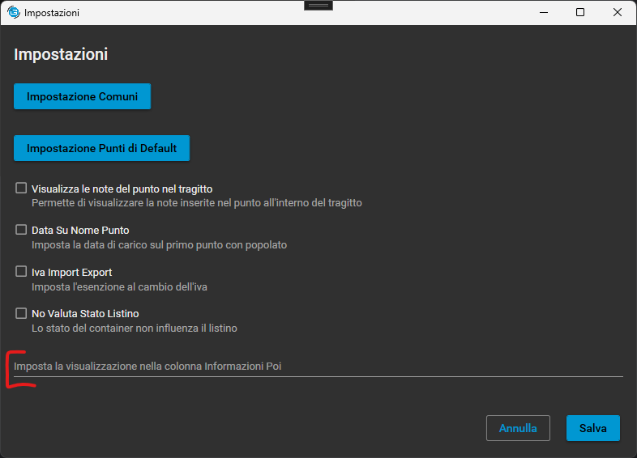

📘 Registro delle novita
🆕 Novità recenti
2025-07-10
È stato reintrodotto il flag per nascondere gli autisti nella ricerca degli autisti.
2025-07-09
All'interno delle scadenze degli autisti la cella di DataEseguita viene utilizzata per le scadenze che vanno a ripetersi.
Viene utilizzato come data di partenza per la prossima scadenza

2025-07-08
Nelle conferme e' stato sistemato calcolo km delle mappe Cassa2.
- Il calcolo e' stato allineanto in ogni parte del programma
- Ogni volta che vengono recuperati i km della conferma viene usato lo stesso metodo
È stata aggiunta una nuova impostazione per visualizzare il codice dell'autista all'interno della combobox autisti
- Il nome dell'impostazione è
MOSTRA CODICE AUTISTA CON NOMEuna volta attivata o tramite gli ordine o dai container sarà attiva in entrambe le sezioni.

2025-07-05
Nel modulo ConfermaUC.xaml sono stati aggiunti due nuovi controlli ComboBox per permettere la selezione della cassa da parte dell’utente: Cassa1 e Cassa2.
- Le ComboBox
Cassa1eCassa2sono state aggiunte alla UI per consentire la selezione delle casse disponibili. - Nel code-behind è stata impostata la sorgente dati (ItemsSource) delle ComboBox, con le casse disponibili.
- È stata gestita la visibilità dinamica dei controlli in base alle impostazioni operative selezionate.
- Nel file
ImpostazioniOperativoForm.xamlsono state aggiunte due nuove checkbox per abilitare o disabilitare la visibilità diCassa1eCassa2. - Il comportamento delle checkbox è collegato direttamente alla logica di visualizzazione dei ComboBox.
Questa nuova funzionalità permette una gestione più flessibile delle operazioni di cassa, rendendo possibile configurare rapidamente quale cassa utilizzare per ciascuna operazione, migliorando la tracciabilità e l’esperienza utente.
È stata introdotta una nuova funzionalità per gestire la data di fine contratto all'interno del modulo ContrattiPagamantiForm.xaml.
- Aggiunto un nuovo componente
DatePickerper la selezione della Data Fine Contratto. - Il code-behind del form è stato aggiornato per salvare il valore selezionato nella proprietà
DataFineContrattodell’oggettocontrattoPagamento. - L'oggetto
ContrattoPagamentoSelè stato esteso con la proprietàFineContratto. - Nel file
Contratti.csè stata aggiunta la proprietàFineContratto, con valore predefinito 1 gennaio 2050. - La tabella
ContrattiPagamentidel database è stata aggiornata con una nuova colonnaFineContratto.
La gestione della data di fine contratto consente una migliore tracciabilità e automazione dei contratti in scadenza, oltre ad abilitare future funzionalità di notifica e reportistica.
2025-07-04
- In Clienti/Mezzi/Autisti implementata cancellazione multipla dalla ricerca. Selezionando una o più righe dalla griglia, facendo tasto dx in una delle righe selezionate, viene chiesta la conferma di cancellazione. Se le righe selezionate sono più di una richiede nuovamente la conferma.
- N.B. Le operazioni di cancellazione sono tracciate nel file di LOG


Rifattorizzazione Unificazione POI
- Introdotta proprietà
HasPoiUnitiinViaggioe metodoGetHasPoiUniti(). - Sostituito
Repository.MantieniUnitiPoi.AttivoconViaggioSel.HasPoiUniti.
Modifiche UI
- Aggiornato testo in
Impostazioni.xaml. - Riorganizzato layout in
ViaggioUC.xamlconStackPanel.
Logica e Pulizia Codice
- Aggiunto controllo su
el.FatturainConfermaUC.xaml.cs. - Rimossi commenti obsoleti in
Esito.cs.
Aggiornamenti Repository
- Aggiunta colonna
HasPoiUnitiinElencoViaggiTestata. - Revisionate query in
POI.cs.
Correzioni Varie
- Assicurata inizializzazione oggetto
OrdineinUtility.cs.
2025-07-03
Reintegrate le vecchie TxtSpese aggiuntive al viaggio
Attivando la funzionalità Tratta dopo destinazione con nuova tratta.
Attivando la funzionalità Tratta dopo destinazione si attiva la possibilità di creare una nuova tratta dopo aver raggiunto una destinazione.
2025-07-02
attivando la funzione già presente nelle conferme “MITTENTI DESTINATARI CON VIA”, che aggiunge via e luogo nella selezione dei mitt/dest nella combobox, si attiva la stessa funzionalità anche nella scheda del formulario per Produttore e Destinatario


2025-07-01
Aggiunta compensazione scadenze
Aggiunta impostazione per la gestione della colonna "PoiInformation" nella sezione container
Formulari: con tasto dx in ricerca si apre finestra ricerca separata da usare in secondo monitor, con doppio click apre la scheda selezionata

Con questa modifica si può usare un secondo monitor per tenere aperta la ricerca dei formulari
2025-06-30
Aggiunto navigatore per ptv
È stato aggiunto un navigatore per PTV per facilitare la navigazione
Aggiunto nel lettore barcode Secondo numero Network

Ora è possibile leggere anche il secondo numero network con il lettore barcode
arcode/barcode-secondo-numero.png" alt="Secondo numero Network" width="250px"> econdo numero Network" width="250px">